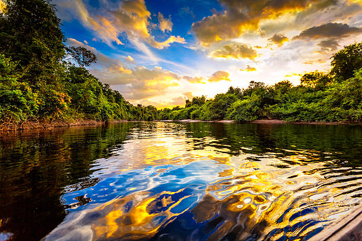

|  | Que o Brasil é considerado um país grande, isso nós sabemos. Mas que ele tem muita beleza e é gigante em diversidade, isso nós também já sabemos e inclusive podemos ver nas belas paisagens naturais que temos ao nosso redor. Mas, como medir isso? Aparência pode ser medida?! Bom, já que não podemos medir beleza ou aparência, então vamos aos dados daquilo que pode ser, afinal, como disse William E. Deming "Não se gerencia o que não se mede". |
|---|---|
A projeção populacional do departamento de econômia e assuntos sociais da ONU, indica que o nosso país é o quinto maior em extensão territorial, com 8.515.767 km² e o nono, em população. Segundo o IBGE, a população atual do país é de 212,6 milhões de habitantes. São Paulo aparece como o estado e também como a cidade com maior população, 45.973.194 e 11.895.578 milhões de habitantes respectivamente.
Um pouco mais de 20% da população está concentrada em 15 cidades, das quais 13 são capitais e tem mais de 1 milhão de pessoas.
Os dados da pesquisa foram publicados na edição de 29 de agosto de 2024, do Diário Oficial da União.
Ranking dos Estados Mais Populosos
1º São Paulo - 45.973.194
2º Minas Gerais - 21.322.691
3º Rio de Janeiro -17.219.679
4º Bahia - 14.850.513
5º Paraná - 11.824.665
Acompanhe os demais dados no Saiba Mais e faça um passeio pelas regiões. 😉